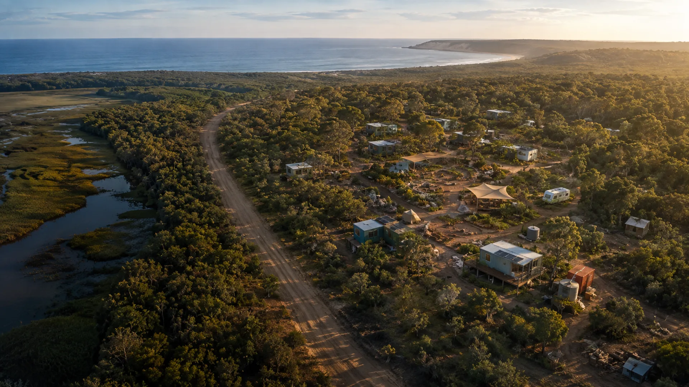

7 Mile and other Minjerribah site and service ideas.
The current ideas span living, residencies, culture, recovery, safety, housing, aged care, longevity, learning and useful work.
Two immediate site ideas.
Site, service and research proposals.
Culture, mentoring, daily rhythm, food, gardens, useful work and support beyond each stay.
Safe place for women and childrenA distinct proposal for a private and welcoming place to be shaped with relevant women around location, leadership and everyday support.
Housing for different stages of lifeConnections between immediate shelter, supported transition, stable homes and ageing in place.
Aged care, longevity and rejuvenation researchEveryday quality of life, ageing in place, Aura digital twins, specialist facilities and future research.
Sand and Screen for all agesA site-neutral mix of sand sport, outdoor cinema, local screen work, comfortable gathering and practical roles.
82 Claytons Road, AmityA supplied map traces about 3.38 acres being considered for longevity, research, learning, art, science and technology.
Setting up each organisationA practical setup path for the separate trading, public-benefit, care, housing, research and shared-service bodies under discussion.
Funding and operating vehiclesDonations, grants, investment, trading income, shared equipment and local work require different structures.